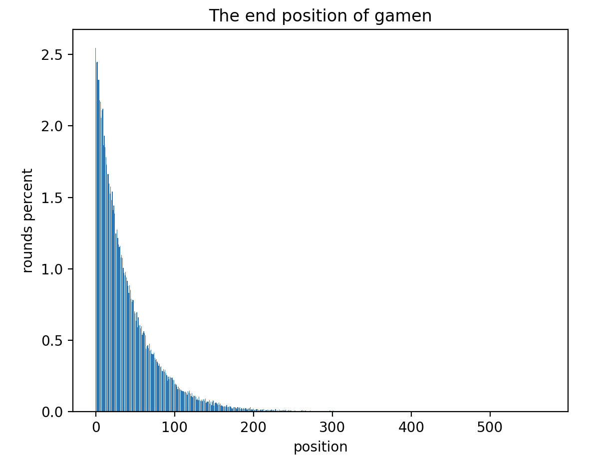

“猜均值的2/3” dApp 游戏设计
猜均值的2/3 是一个经典的博弈游戏，现在把它改造成运行在区块链上的 dApp 游戏，这是游戏的基本规则：
- 玩家支付
任意金额参与游戏 - 计算所有用户支付的
金额总和 - 计算
金额总和平均值的 2/3 作为胜利数字 - 玩家支付的
任意金额最接近胜利数字则获胜
游戏的奖励规则是：
- 获胜者获得本轮游戏所有用户支付的
金额总和 - 合约在每轮游戏抽取
金额总和的 1% 作为服务费
一个重要的问题是，每轮游戏多少玩家参与？或者说每轮游戏什么时候结束？关于游戏结束的规则是这样：
- 每一轮游戏，当玩家参与的时候，可以知道玩家是第
n个参与的 - 生成一个随机数
x（10<=x<=100） - 根据
n和x，生成一个随机数的边界l, r = n-x, n+x - 在
[l, r]的区间内生成一个随机数y - 如果
y == n，本轮游戏结束
还有一点补充规则：
- 如果一个用户多次参与游戏，以第一次参与结果为准
- 如果多个用户支付的
任意金额相同，第一个参与的用户获胜
上面是这个游戏的全部规则。
结束游戏的规则有点复杂，举一个具体的数值，比如有一个玩家，是第 n=50 个参与进游戏的，然后生成了一个随机数 x=10，那么生成的随机数边界就是 l, r = 45, 55。在范围 [45, 55] 中再生成一个随机数，如果正好是 50，本轮游戏结束。
为什么要这样做？因为区块链上的数据是公开的。在原版的“猜均值的2/3”游戏中，玩家选择的数字，相互是保密的。但在区块链上很难做到这一点。所以这里提出的 dApp 版本游戏规则，至少有两点和原版规则不同：
- 玩家参与游戏支付的金额是无限制的，可以是 0，也可以无限大，而原版规则有上限
- 玩家数量是不确定的，原版规则是知道有几名玩家参与
这样差异的设计都是因为，区块链上的数据是公开的，所以要引入一些随机的机制。如果没有随机结束的机制，在玩家数量确定的情况下，越是后面参与的玩家，越有优势，因为可以根据前面参与玩家的记录，推算出自己用哪个数字参与更有可能获胜。
当然，最后参与的玩家并不一定有能力扭转局势，尤其是在参与数值有上限的情况下。但如果玩家数量是随机的，就不存在“后面参与的玩家”一说，因为谁都不知道游戏什么时候结束，谁是最后一个玩家。所以即使玩家能够支付出扭转局势的金额，也会被后面的玩家拉下来。
至于原版游戏要求参与数值为整数，dApp 版本的参与数值可以没有限制，可以是小数。是因为原版游戏是人为给出参与数值，而 dApp 版本可以在计算机上自由输入，并且结果是智能合约计算的，不限制精度也没有影响。
然后解释一下游戏结束的规则。这个规则的效果是，能在大多数情况下，让游戏在参与人数为 [10, 100] 的区间内结束。这个区间对应 规则 9 中 x 的范围。
这个规则可以这样理解，每个用户都拥有能力结束游戏，但是能力是随机的，最高 1/10，最低 1/100。如果拥有 1/10 的能力，就是有 1/10 的可能性让游戏结束。
假设所有用户都拥有最高的能力 1/10，那么游戏大概率会在 10 个人参与后结束。每个人触发“游戏结束”这个事件的概率是独立的，不管多少人参与都是 1/10。参与的人数越多，结束的可能性越大，因为不结束的可能性是 9/10 的人数次方。
假设所有用户都拥有最低的能力 1/100，那么游戏大概率会在 100 个人参与后结束。
所以 规则 9 中 x 的范围大概就限定了参与人数的范围。当然，这里的人数范围 [10, 100] 不是严格的概率计算。
按照上面定义的游戏结束规则，这里模拟了 10 万次运行的结果，记录下游戏会在“有多少个玩家参与”的时候结束，代码在这里：guessavg/emulate_tool

这个图的横坐标是参与游戏的玩家数量，纵坐标是在对应的数量上，游戏结束的次数。比如在接近 1 的位置上，有 2500 次，说明在 10 万次游戏中，有 2500 次 1 个玩家参与就结束了。
如果次数不够直观的话，可以看这个比例的图，每个数字上结束的比例不超过 2.5%。越靠前的位置，游戏结束的可能性越大，因为每次都是从 0 开始，前面的位置结束游戏的机会更多一点。

这个比例统计图更能够说明结果，游戏有接近 20% 的概率在参与人数小于 10 的情况下结束，有接近 70% 的概率在参与人数为 [10, 100] 的范围内结束。参与人数大于 300 才结束游戏的概率，只有 0.07%。
虽然这个规则形成的结果，概率上不是完整的正态分布，但是基本上能够满足一开始的需求，也就是让游戏在随机的时间点结束，并且结束的时间不会很离谱，不会导致参与人数太少或者太多，而且还提供了一定的小概率，允许参与人数达到 500 左右。
相信这会是一个合理的设计。